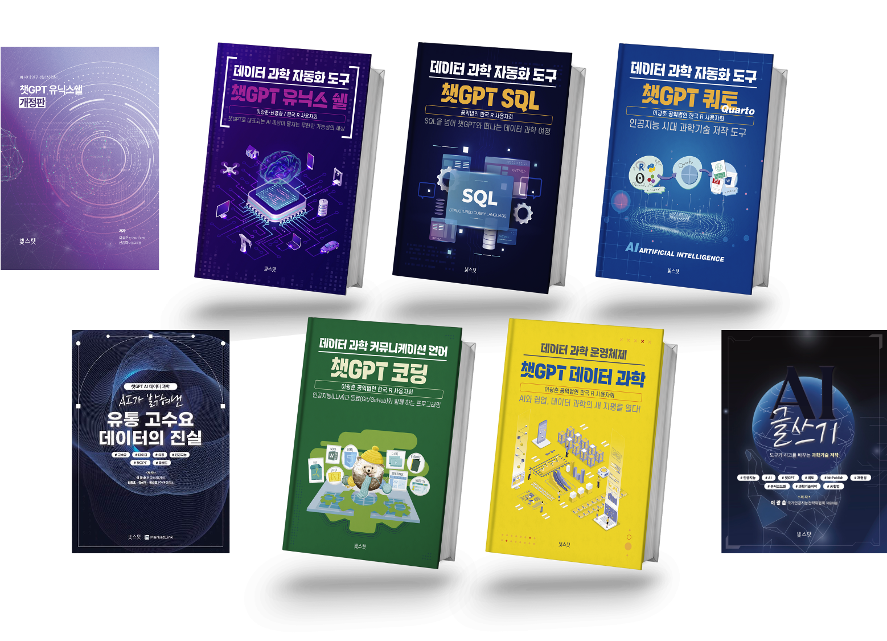
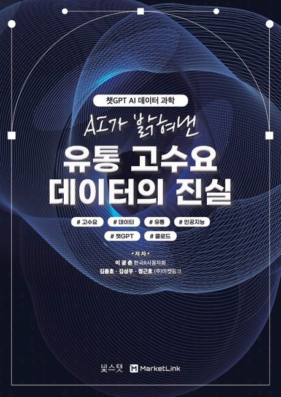
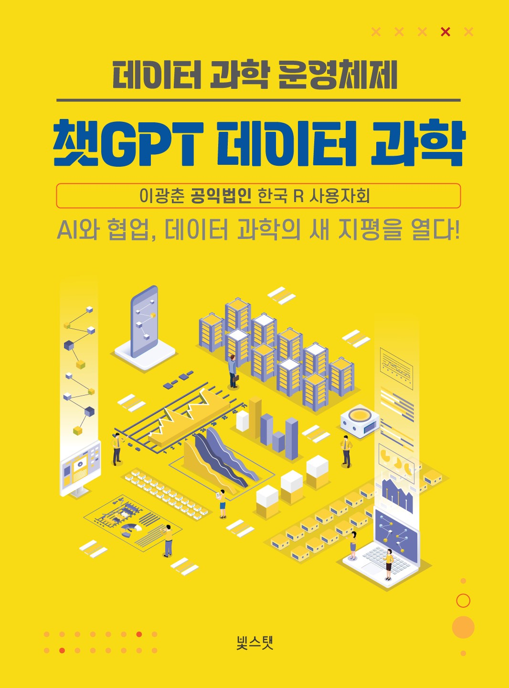
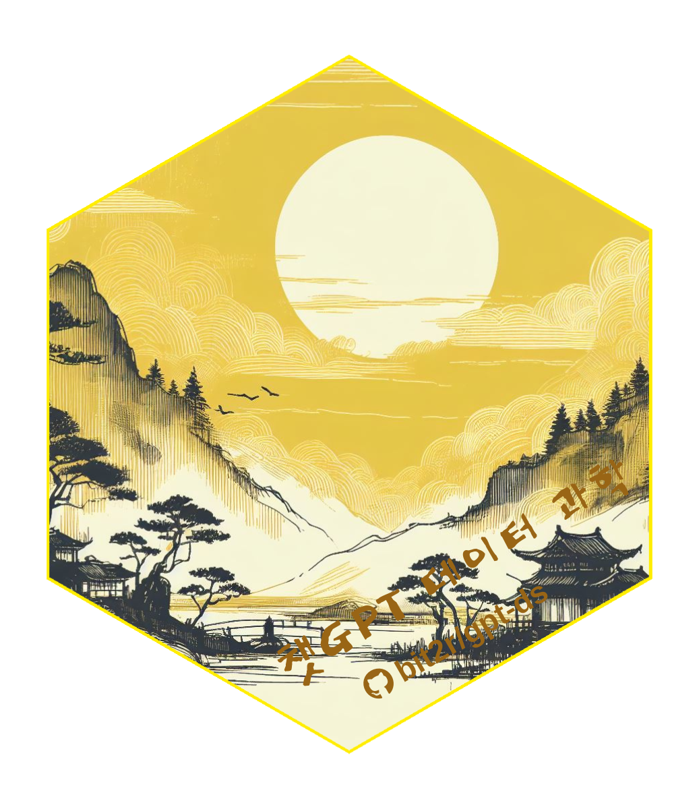
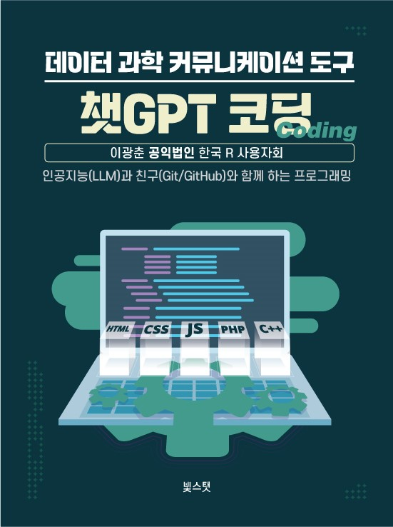
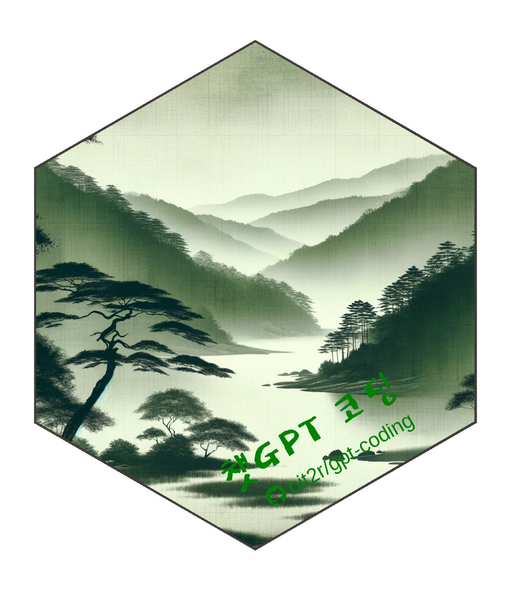
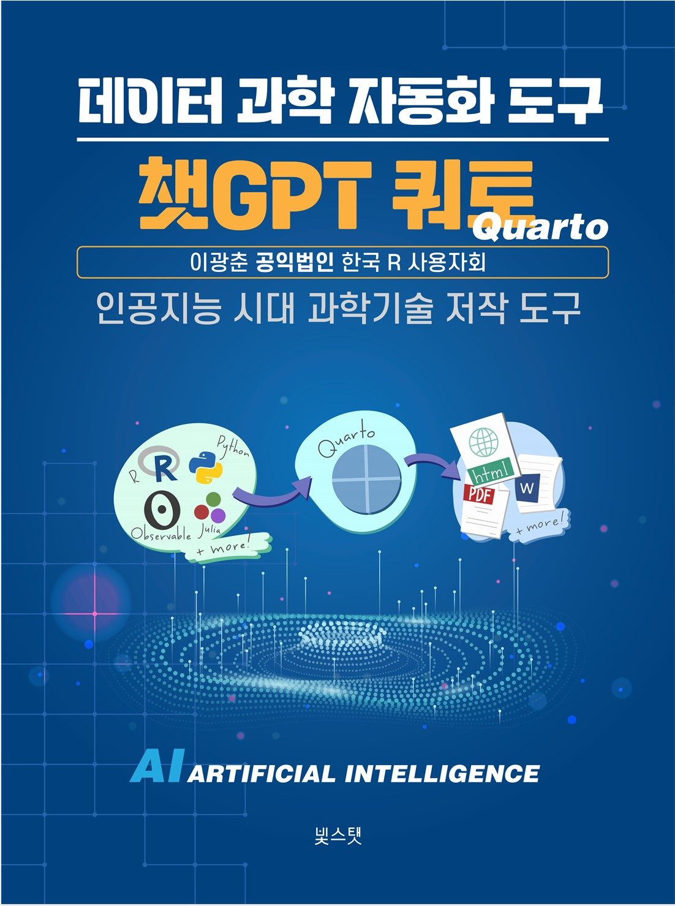
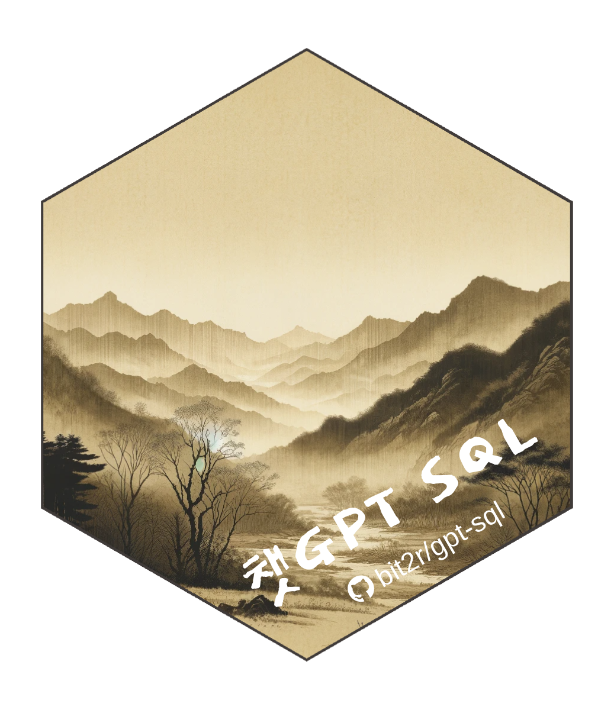

한국 R 사용자회
공익법인 한국 R 사용자회는 2022년에 설립되어 디지털 불평등 해소와 통계 대중화를 목표로 활동하고 있습니다. 오픈 통계 패키지(BitStat) 개발을 주도하고, 통계 및 데이터 과학 전자책을 제작·발간하고 있으며, 출판사를 설립하여 챗GPT를 주제로 출판도 시작했습니다. 데이터 과학 패키지와 출판물은 회원들의 자발적인 참여와 노력으로 지속적으로 개발 및 유지보수가 이루어지고 있습니다. 또한 데이터 과학 분야에서 인공지능과의 공존 가능성을 본격적으로 연구하고 탐색하고 있습니다. 이러한 다양한 활동을 통해 한국 R 사용자회는 데이터 과학과 데이터 문해력을 높이고, 인공지능 시대의 격차 해소를 통해 더 나은 세상을 열어가고 있습니다.
데이터로 여는 더 나은 세상,
한국 R 사용자회
통계적 정밀함과 오픈 소스의 투명성을 결합해 데이터 민주주의와 과학적 방법론을 확산시키는 비영리 사단법인입니다.
공개 패키지
dlookr·bitStat 등 분야별 R 패키지를 직접 개발합니다.
발행 도서
챗GPT 시리즈와 오픈 전자책으로 지식을 나눕니다.
공개 데이터
교육·연구·현업용 오픈 데이터셋을 제공합니다.
활동·교육
대학·공공·기업 대상 워크샵과 AI 실무 교육을 진행합니다.
우리의 사명 — Open Science & Data Literacy
데이터 과학과 데이터 문해력을 높여 인공지능 시대의 격차를 줄여갑니다.
투명한 데이터 생태계
오픈 소스 정신을 바탕으로 누구나 데이터에 접근·분석할 수 있는 투명한 도구와 문화를 보급합니다.
과학적 리터러시 함양
통계적 사고와 프로그래밍 교육으로 인공지능 시대에 필수적인 비판적 사고 능력을 향상시킵니다.
공익을 위한 기술 협력
정부기관·연구소·사회적 기업과 협력해 사회 문제를 데이터로 해결해 나갑니다.
챗GPT 출판










교육·워크샵 활동
한국 R 사용자회는 대학·공공·기업을 대상으로 데이터 과학과 인공지능(AI) 실무 교육을 이어가고 있습니다. 세종대 소프트웨어 카펜트리 + AI 워크샵, 여론·설문조사 기업 대상 AI 실무 교육 등을 진행하고 있습니다.
자세한 내역은 활동·교육 페이지에서 확인하실 수 있습니다.
서울 R 미트업
R Consortium R User Groups에 등록된 Seoul R Meetup은 매월 개최되는 데이터 사이언스 R/Tidyverse 미트업입니다. ChatGPT, Data Analytics, Tidyverse, Tidymodels, Shiny, Dashboard, Machine Learning, Digital Writing, Quarto/RMarkdown, Deep Learning 등 통계, AI/ML/DL, 데이터 사이언스, 시각화, 제품 개발 등을 실제 현장에서 직접 데이터를 다루는 분들, 학교와 연구소에서 연구 개발을 하시는 분들뿐만 아니라 관심 있는 분들이 함께 모여 교류하고 지식을 나누는 미트업입니다.
기타 커뮤니티 관련 링크는 아래와 같습니다.
- 세계 R 미트업 현황 (Global R Meetup Dashboard)
- 한국 R 사용자회 (Korea R User Group)
- 한국 R 컨퍼런스 (Korea R Conference)
- 서울 R 미트업 아카이브 (Seoul R Meetup)
- 유튜브 채널 (YouTube)
- 페이스북 그룹 (Facebook)
- 슬랙 (Slack)
공익법인 후원
한국 R 사용자들을 위한 특별한 기회, 여러분의 후원으로 더욱 강력해지세요!
전문적인 R/쿼토 지원
서울 R 사용자 모임의 일원이 되어 R/쿼토의 복잡한 문제를 해결하는 데 필요한 전문적인 도움을 받으세요. 여러분의 데이터 분석 여정을 쉽고 효율적으로 만들어 드립니다! 디스코드 질의응답 채널에 참여하여 적극적으로 질문하고 답변을 주고받으세요.
전자 기부금 영수증
모든 후원에 대해 전자 기부금 영수증을 발급해 드리며, 여러분의 후원이 어떻게 사용되는지 투명하게 보여 드립니다. 여러분의 기여가 커뮤니티에 얼마나 중요한지 알 수 있습니다.
서울 R 밋업에서 배우는 선진 데이터과학 기술
후원자 여러분은 서울 R 밋업 행사에 우선적으로 초대되어, 업계 선두 주자들로부터 최신 R/쿼토 기술과 트렌드를 배울 수 있는 기회를 얻습니다. 네트워킹과 지식 공유의 장에서 여러분의 역량을 한 단계 업그레이드하세요!
여러분의 후원은 우리 모두에게 가치 있는 지식과 기술을 전파하는 데 큰 도움이 됩니다. 지금 바로 공익법인 한국 R 사용자 모임의 후원자가 되어, 데이터 과학 커뮤니티를 더욱 강력하게 만드세요!
회원가입 및 기부금 신청
회원가입 신청
후원 계좌
하나은행 448-910062-30904 / 사단법인 한국알사용자회
후원금
2만 원 이상
후원금 납부(약정) 후 기부금 영수증 발급 신청